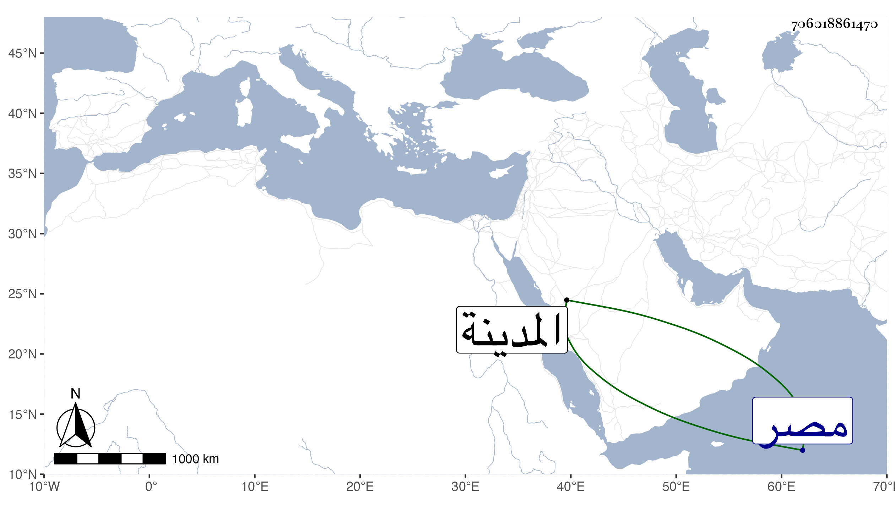

0902Sakhawi.DawLamic.ITO20230111-ara1.EIS1600.706018861470
Biography ID: 706018861470
400
محمد الكمال أبو الفضل أخو الذي قبله . ولد في خامس ذي القعدة سنة ثلاث وثمانمائة بالمدينة ، وأمه رقية ابنة الشيخ محمد بن تقي الكازروني وأحضر في الثالثة على أبيه سنة ست جزءا من حديث نصر المرجي بل سمع عليه وعلى أخويه وغيرهم كالنور المحلي سبط الزبير وحفظ المنهاج وغيره ، واشتغل على أبيه والجمال الكازورني ومما قرأ عليه الموطأ والنجم محمد بن عبد القادر الواسطي ابن السكاكيني أخذ عنه الفقه والمعاني والبيان شريكا لأخيه أبي الفرج ووصفه بالعالم العلامة ، ودخل مصر وغيرها روى عنه النجم بن فهد وذكره في معجمه ومات مقتولا لا بمكانهم في العوالي خارج المدينة في ضحى يوم السبت سادس ذي القعدة سنة ثلاث وأربعين على يد بعض الرافضة لكونه طالبه بدين لمحاجير له مطله فألح عليه وحمل للبقيع فغسل به وصلى عله ودفن بعد صلاة العصر عوضه الله الجنة .
